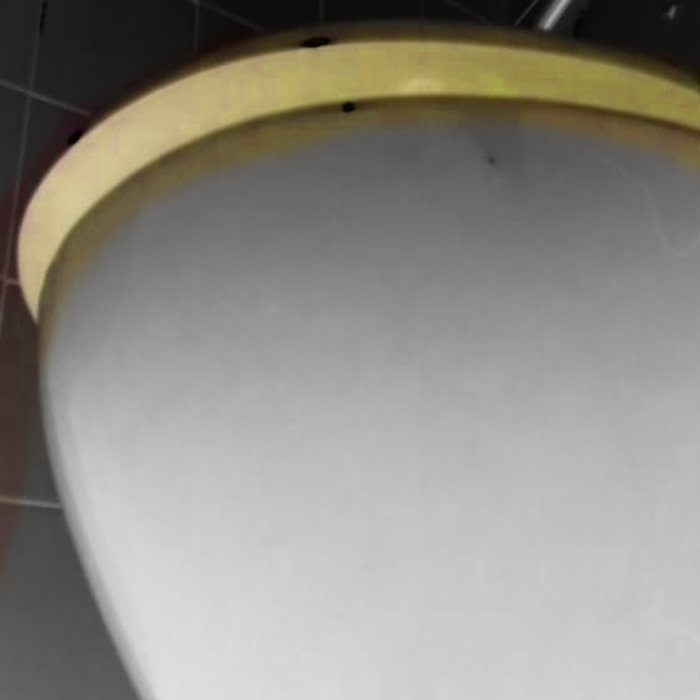
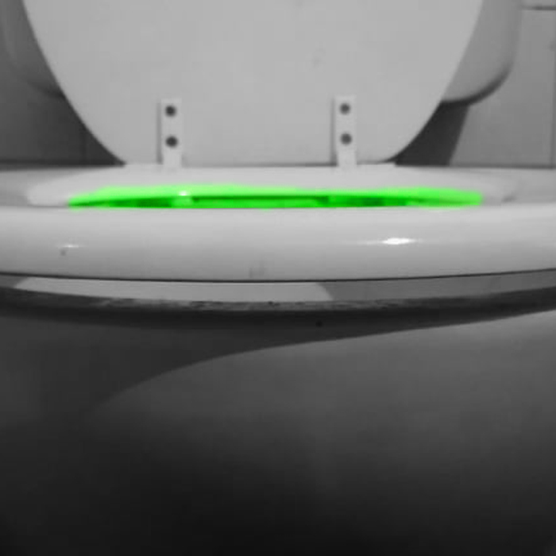
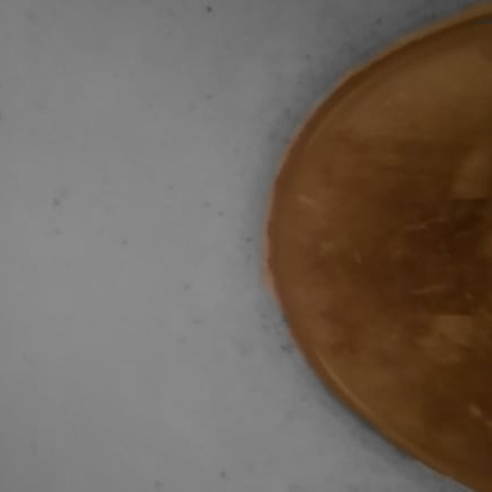
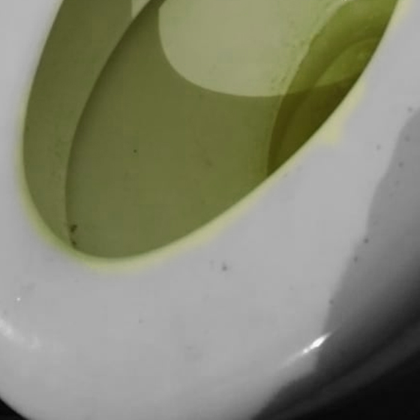

Caca du Pocamonta

01-Parto de la Caca
02-Camion de Caca
03-Vampiros de la Caca
04-Pastas de Caca
05-Elefante de Caca
06-Depurador de Caca
07-Entrecalles de Caca
08-Hermosos Culos de Caca
09-Dispenser de Caca
10-Sonambulo entre la Caca
11-Catedral de Caca



